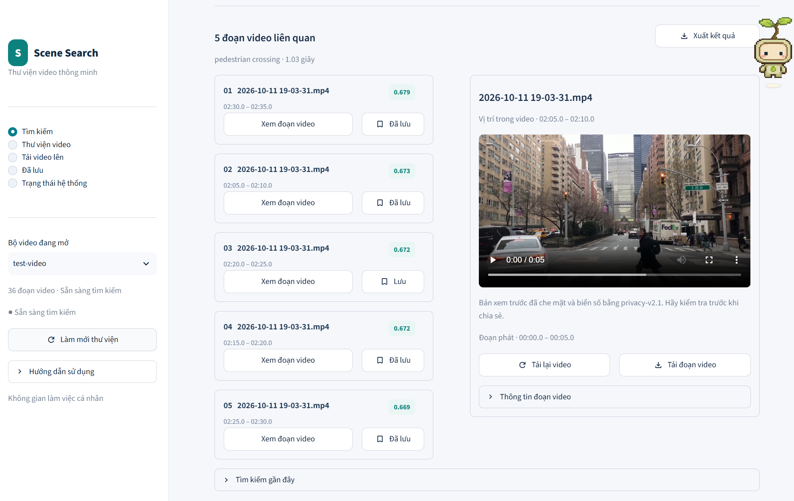
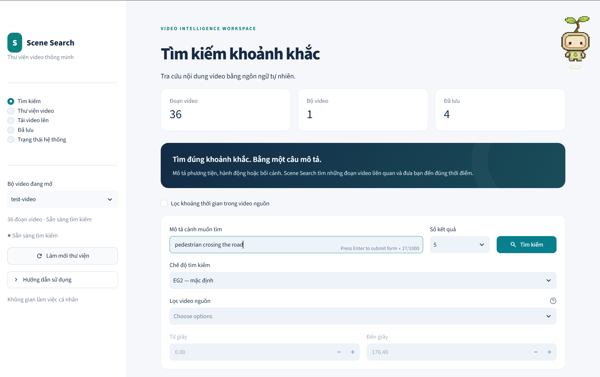
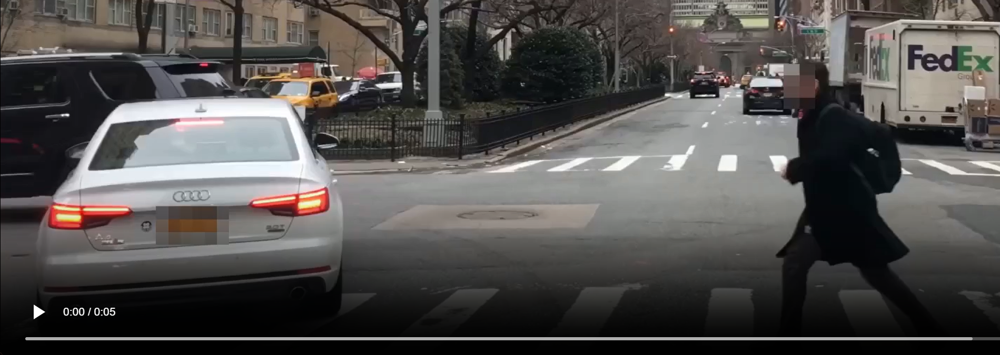
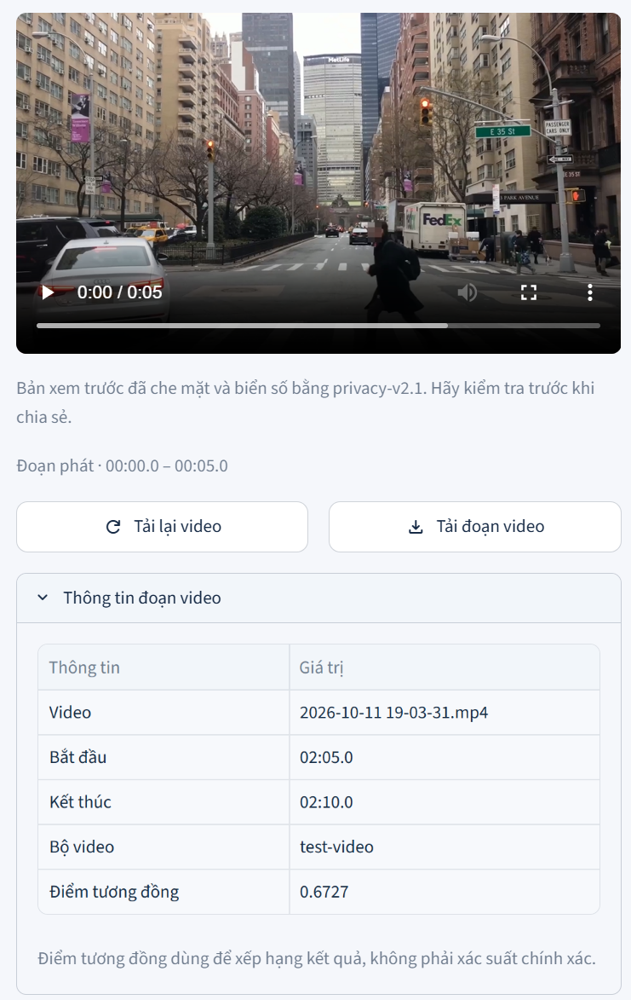

SceneSearch
Công cụ tìm kiếm ngữ nghĩa
trong dữ liệu lái
Mô tả cảnh cần tìm.
Xem và duyệt clip phù hợp.

Xem clip và lưu kết quả phù hợp.
Nút thắt nằm ở khâu duyệt video
TÌNH HUỐNG GIẢ ĐỊNH ĐỂ MINH HỌA
Mục tiêu: tìm 1.000 clip “pedestrian crossing” cho training AEB / Trajectory Prediction.
Trung bình xem 2 giờ video lái xe mới gặp 1 lần “pedestrian crossing”.
1.000 cảnh × 2 giờ/cảnh ≈ 2.000 giờ video nguồn.Tổng thời lượng dataset gốc trước khi lọc, gồm cả cảnh thường và cảnh đích.
Mỗi lần “pedestrian crossing” chỉ diễn ra trong 1–3 giây của video.
Cảnh ngắn, dễ bỏ sót khi duyệt hoặc tua nhanh.Workflow khi chưa có SceneSearch · Thời gian ước lượng
~2h
~6h
~960h
~50h
~8h
Khâu duyệt thủ công cần được tự động hóa
Từ video đến câu truy vấn
CẢNH CẦN TÌM
“pedestrian
crossing”
Lọc theo mốc thời gian
trong video gốc.
Ảnh demo bên phải dùng query English.

Xem cảnh, kiểm tra mốc thời gian

Mặt đã làm mờBiển số đã làm mờClip xem trước đã qua xử lý privacy
Kết quả theo thứ tự xếp hạng.
Người dùng kiểm tra nội dung từng clip.
METADATA CỦA SAMPLE

Xem similarity giữa vector embedding
của query và của cảnh.
Người dùng quyết định clip phù hợp

Kết quả tìm kiếm
Metadata, rank và score
Từng clip đã xử lý privacy
Danh sách đã lưu
Đánh dấu và lịch sử chỉ giữ trong session.
Kiến trúc tổng quan
Backend điều phối hai luồng: chuẩn bị index và tìm kiếm trên dữ liệu đã sẵn sàng.
Streamlit UI
Upload MP4
Nhập query + filters
Xem, duyệt và tải clip
DemoClient → FastAPI
Upload · Start · Status
Search · Preview
VideoLibrary / Điều phối backend
Quản lý bộ video, chạy background task và gọi search engine.
A / INDEXING — khi có video mới
Chia clip→Privacy
+ geometry→EG2 encoder
+ publish index
B / SEARCH — khi nhận truy vấn
source / time→EG2 query
+ cosine ranking→Top-k clip
+ metadata
Indexing ghi index; search đọc bản đã publish.
SQLite
Upload records
Trạng thái xử lý / ready
Filesystem
NumPy vectors + JSON
Video gốc, cache
safe.mp4 + poster
Embedding và indexing
Tách media để xem khỏi dữ liệu inference; EG2 tạo vectors cho toàn clip và các chi tiết.
FFmpeg
Chia clip ≤ 5 giây
Clip cuối giữ
thời lượng thật
raw.mp4
Clip để xem
Privacy pipeline
Phát hiện / theo dõi mặt, biển số
→ render pixelate
safe.mp4 + poster
Media playback
Không phải đầu vào encoder.inference.mp4
Clip cho model
Frames + object tracks
5 RGB frames → GLOBAL
YOLO11n + ByteTrack → local specs
EG2 encoder
GLOBAL + local vectors
768 chiều · FP32 · normalizedGLOBAL / toàn clip
1 vector từ 5 RGB frames
FRAME / khung hình
8 units cho chi tiết ảnh
WINDOW / thời gian
3 units, mỗi đoạn 2 giây
TUBE / object track
Tối đa 3 units theo đối tượng
GLOBAL dùng cho ranking ban đầu; local evidence phục vụ đánh giá sâu khi chọn shadow / active.
Query và xếp hạng
Lọc trước khi chấm điểm; local evidence chỉ được xét khi chọn mode phù hợp.
Query + filters
Mô tả cảnh
Source / time
Mode + top-k
Lọc corpus
Chọn rows và vectors theo video nguồn, khoảng thời gian
EG2 query
Prompt SearchQuery
→ query vector
Cosine scores
GLOBAL vectors
× query vector
Ranking gốc
Sắp theo score
→ EG2 candidates
eg2_only
Giữ thứ tự cosine ranking
của GLOBAL vectors.
shadow
Chấm local_score → decide.
Ghi nhận đề xuất, giữ ranking gốc.
active
Có thể đưa 1 candidate lên đầu;
giữ thứ tự tương đối phần còn lại.
UI hiển thị metadata và lấy preview để phát video.
Top-5: phạm vi đánh giá local evidence. Top-k: số kết quả trả về. Score không phải xác suất đúng.
Hiệu suất
CẤU HÌNH PHẦN CỨNG CHO KIỂM THỬ
Phần cứng CPU
| Model CPU | Intel Core i5-12500H | |
|---|---|---|
| Cores / threads | 12 / 16 | cores / threads |
| RAM | 16 | GB |
Chất lượng retrieval · EG2 / full200
| Tên metric | Top5 (Hit@5) | |
|---|---|---|
| k | 5 | |
| Tập đánh giá | full200 · 200 clip / 63 query | |
| Giá trị | 84,13% | EG2 |
Embedding / indexing
| Video đầu vào | 10 | phút |
|---|---|---|
| Số clip sau cắt | 120 | clip |
| Thời gian xử lý | 30 | phút |
Query
| Kích thước index | 120 | clip |
|---|---|---|
| Top-k | 5 | |
| Thời gian phản hồi | 1.000 | ms |
Rút ngắn khâu tìm cảnh thủ công, để con người tập trung vào lựa chọn.
Workflow với SceneSearch
Tìm 1.000 clip “pedestrian crossing” trong dataset nguồn 2.000 giờ video.
01 / Chuẩn bị index · Thực hiện trước khi tìm kiếm
TỐC ĐỘ EMBEDDING ĐƯỢC CUNG CẤP
3 phút video → 9 phút xử lýThời gian embedding ≈ 3 × thời lượng video.
NGOẠI SUY CHO 2.000 GIỜ VIDEO
≈ 6.000 giờ chạy máy≈ 250 ngày nếu chạy tuần tự, liên tục trên cùng cấu hình.
Chưa cộng upload, privacy, geometry và publish index.
02 / Khai thác dữ liệu đã có index · Thời gian ước lượng
+ lọc metadata~8 giờ công
+ hệ thống tìm kiếm~5 giây + 1 giây
ứng viên phù hợp~5,6 giờ công
+ đóng gói~8 giờ công
Dò thủ công ~960 giờ công → duyệt ứng viên ~5,6 giờ công theo ước lượng minh họa.
Tổng khâu khai thác ≈ 21,6 giờ công, ngoài thời gian chuẩn bị index.
Tốc độ embedding phụ thuộc vào cấu hình phần cứng, thiết bị CPU/GPU và mức độ xử lý song song.
Do đó, thời gian embedding có thể được rút ngắn thêm khi nâng cấp phần cứng hoặc tăng mức xử lý song song.
Cảm ơn bạn
đã theo dõi.
Rất mong nhận được câu hỏi và góp ý.